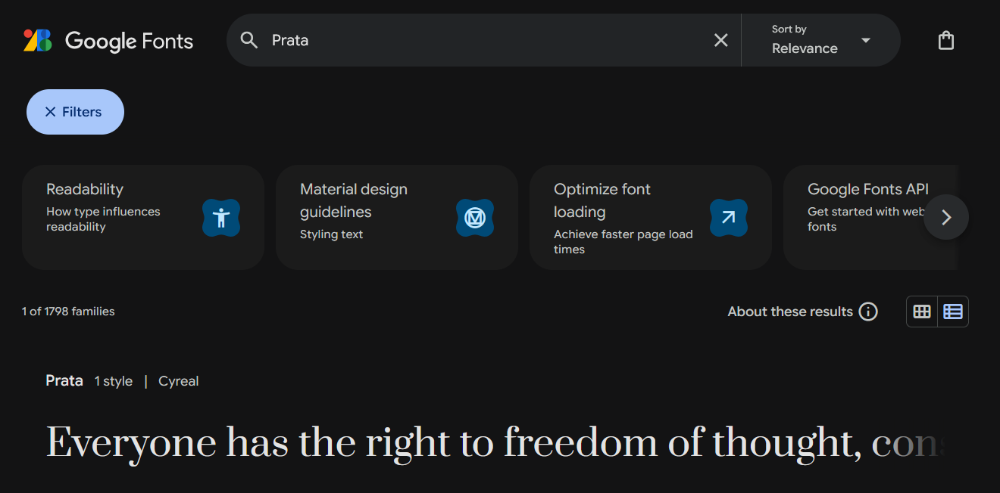
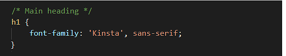
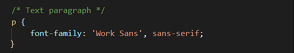
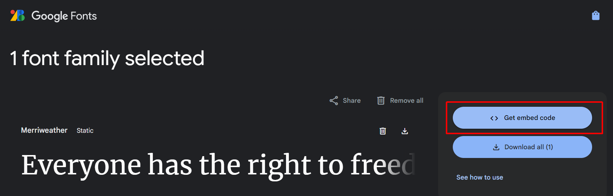
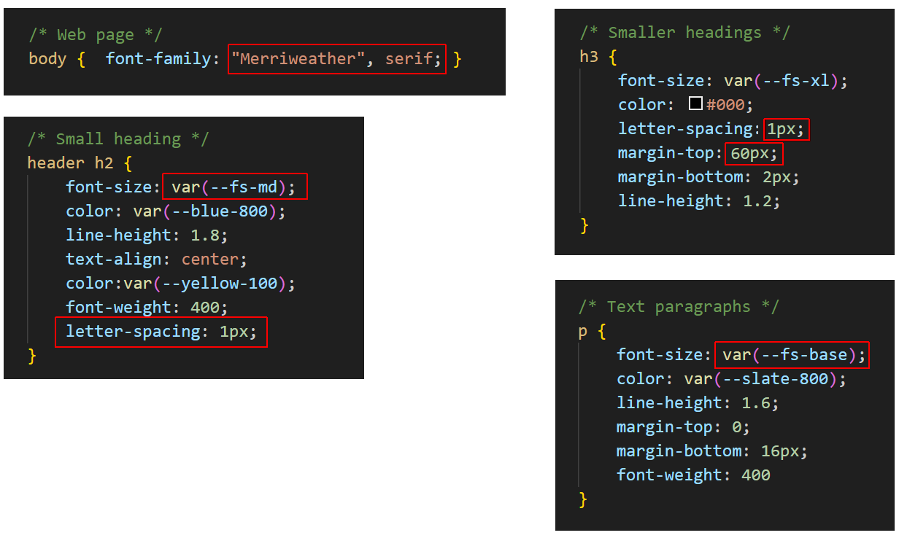
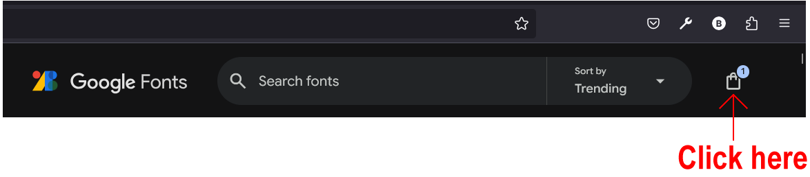
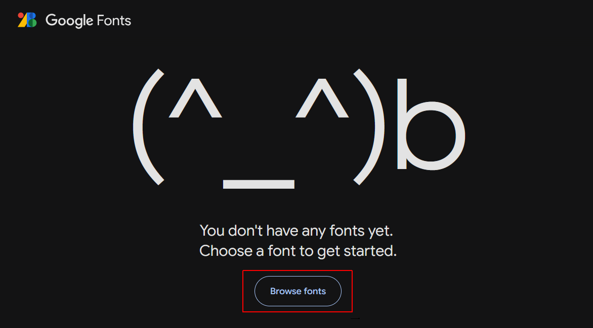
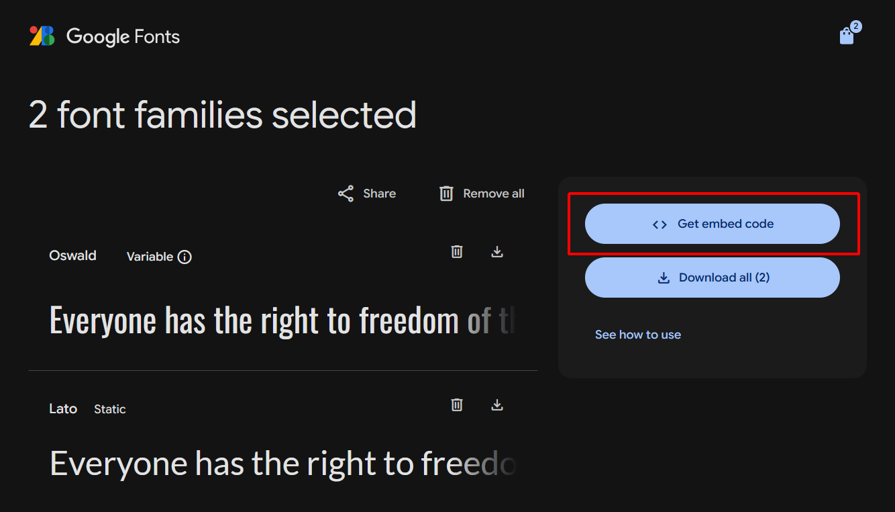
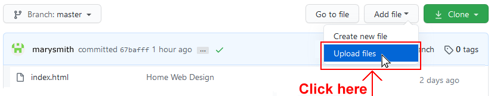

Learning Goals
At the end of this Tutorial, you will be able to:
- Select font-families from the Google Fonts website.
- Add Google Fonts HTML code to the <head> of a web page.
- Add selected Google Fonts names to the font-family property in a stylesheet file.
In this Tutorial you will add Google Fonts to the page-4.html and page-5.html sample files you created in the previous Working with Images and Videos Tutorial.
About Google Fonts
Google Fonts offers the Internet’s largest collection of open-source, royalty-free fonts. All 900-plus fonts can be used without restriction for personal, not-for-profit or commercial web projects.
To select a particular font-family, enter its name in the search box at the top of the home page.
To see a list of font-families that meet certain criteria, choose from the filtering options at the left of the home page.

Popular fonts in 2025
As with much else, there are fashions and trends in fonts. Here are the more widely-used serif and sans-serif fonts at the moment.
| SERIF FONTS | SANS SERIF FONTS |
|---|---|
| Playfair Display (headings) | Bebas Neue (headings) |
| Prata (headings) | Work Sans |
| Abril Fatface (headings) | Source Sans Pro |
| PT Serif | Rubik |
| Domine | Outfit |
| Libre Baskerville | Montserrat |
| Roboto Slab | Open Sans |
For inspiration in choosing fonts and font combinations, see Further resources.
Google Fonts: the three steps
There are three basic steps to using Google Fonts. They are as follows.
- Select your font: From the Google Fonts website you choose the font-family or combination of font-families you want to use for a particular website.
- Copy-and-paste: You copy the HTML code generated by the Google Fonts website into the <head> of every page on which you want to use your chosen font(s).
 In the example above, the name of the font is ‘Merriweather’.
In the example above, the name of the font is ‘Merriweather’. - Update your CSS file: Edit the font-family style rules in your CSS file with the name of your chosen font. For example, to use the ‘Kinsta’ font for your <h1> headings, you would edit the h1 selector in your CSS file as follows.  And if you wanted to use the ‘Work Sans’ font for your <p> text paragraphs, you would edit the p selector in your CSS file as follows.  Note that the font name is always wrapped in a pair of single or double quotation marks. You can also see that every Google Font name is followed by a comma (,) and what is called a fallback font – either serif or sans-serif. This is the font that is displayed when the web page is viewed without a live Internet connection.
Working with the van Gogh web page
You will begin by working with the sample page-4.html web page and its linked style-4.css stylesheet.
Obtaining the Google Fonts code
Your first task is to go to the Google Fonts website, select the weight/styles of your required font-family, and then to copy the related HTML code.
- In your web browser, go to the Google Fonts website at the address below: https://fonts.google.com
- In the Search box at the top of the screen, type the font-family (typeface) name of Merriweather.
 Next, in the search results displayed in the lower half of the screen, click on Merriweather.
Next, in the search results displayed in the lower half of the screen, click on Merriweather. - At the top-right of the screen click the Get font button.

- Next, click the Get embed code button. 
- At the right of the screen, you can see that Google Fonts has created the relevant HTML code.
 Click the Copy code button to copy the HTML code.
Click the Copy code button to copy the HTML code. - You can now close the Google Fonts tab in your web browser.
Updating page-4.html with the font link
Next, you will paste the HTML code you copied from Google Fonts into your web page.
- In VS Code, open the page-4.html web page.
- In the <head> of the web page, paste the copied HTML code just before the closing </head> tag.
Optionally, add the following comment line just above the pasted Google Fonts code.
<!-- Google Fonts -->Your web page <head> should now look similar to that below.
- Save your page-4.html web page.
When you view the page-4.html page in a web browser, you can see nothing has changed. For your selected Google Font to display, you also need to update the web page's linked stylesheet file.
Updating the style-4.html stylesheet
Your final task is to update the linked stylesheet with the name of the Google Font you want to use in your web page. Here are the steps.
- In VS Code, open the following stylesheet file: style-4.css
- In this stylesheet, you are using only a single font-family for all the text: headings, sub-headings and paragraphs. Update the style selectors as shown below.  As you can see, when you change the font-family on a web page, you may need to make other adjustments as well.
- Save your style-4.css file and view the page-4.html page in your web browser.
✅ Task completed. You can now close this web page and stylesheet in VS Code.
Working with the Tourism web page
Next, you will work with the sample page-5.html web page and the sample style-5.css stylesheet. You will add two fonts: Oswald (for headings and sub-headings) and Lato (for text paragraphs).
- In your web browser, go to the Google Fonts website at the address below: https://fonts.google.com
- At the top-right of the screen, you can see an icon with the number 1. Google Fonts has 'remembered' you have previously chosed one font-family. In this case, the Merriweather family.  Click on the icon.
- On the next screen display, click the Remove all button.

- You are now shown a screen similar to the following. Click the Browse fonts button to return to the Google Fonts home page. 
- In the Search box at the top of the screen, type the font-family (typeface) name of Oswald and then click this font-family in the search results. This is a condensed (‘narrow’) font-family suitable for headings. For paragraphs of text, however, it can be difficult to read.
- On the next screen, click the Get font button, and on the screen after that, click Get embed code.
- Do not yet copy the HTML code. You want to add a second font to the list of fonts for copying-and-pasting.
- Instead, click the Home icon at the top-left of the screen.

- In the Search box at the top-left of the screen, type the font-family name of Lato and then click this font-family in the search results.
- On the next screen, click Get font. Google Fonts now displays the two font families you have selected.  Click Get embed code.
- At the right of the screen, you can see that Google Fonts has created the relevant HTML code for the two font families.
 Click the Copy code button to copy the HTML code.
Click the Copy code button to copy the HTML code. - You can now close the Google Fonts tab in your web browser.
Updating page-5.html with the font link
Next, you will paste the HTML code you copied from Google Fonts into your web page.
- In VS Code, open the page-5.html web page.
- In the <head> of the web page, paste the copied HTML code just before the closing </head> tag.
Optionally, add the following comment line just above the pasted Google Fonts code.
<!-- Google Fonts -->Your web page <head> should now look similar to that below.
- Save your page-5.html web page.
When you view the page-5.html page in a web browser, you can see nothing has changed. For your selected Google Font to display, you also need to update the web page's linked stylesheet file.
Updating the page-5.css stylesheet
Your final task is to update the linked stylesheet with the name of the Google Font you want to use in your web page. Here are the steps.
- In VS Code, open the following stylesheet file: style-5.css
- In this stylesheet, you will use the Oswald font for headings and the Lato font for text paragraphs. Update the style selectors as shown below.
 As you can see, when you change the font-family on a web page, you may need to make other adjustments as well.
As you can see, when you change the font-family on a web page, you may need to make other adjustments as well. - Save your style-5.css file and view the page-5.html page in your web browser.
✅ All done. You can now close this web page and stylesheet in VS Code.
Uploading your files to GitHub
You are now ready to upload your work to your account on GitHub.
- Open a new tab in your web browser and go to github.com. If you are not already signed in to your GitHub account, sign in now.

- On your GitHub home page, click the ‘repo’ that holds your web pages. Its name will look as follows, where username is your chosen username on GitHub.
username.github.io

- On the next GitHub screen displayed, near the right of the screen, you can see a button named Add file. Click on it.

- From the dropdown list displayed, choose the option Upload files. 
- In File Explorer (Windows) or Finder (Apple Mac), drag-and-drop your 📁 exercises sub-folder to upload it to your repository on GitHub.

- Scroll down to the bottom of the GitHub screen, and accept or edit the short message (Add files via upload) in the Commit changes box.
- Finally, click the green Commit changes button to upload your files.

Your updated two sample pages are now published on GitHub at web addresses similar to the following:
https://username.github.io/exercises/page-4.html
https://username.github.io/exercises/page-5.html
It may take a few minutes for your uploaded files to appear on GitHub.